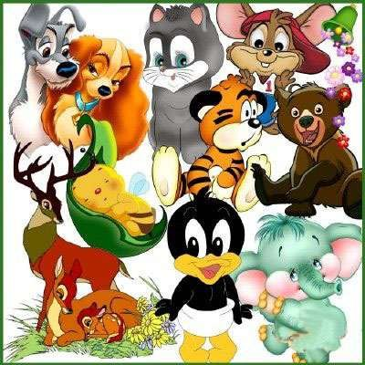

Our Animal Friends
Man is a social animal. This fact itself proves our nearness to the animal kingdom or the animal world. Animals are very faithful and helpful. Right from the very early stages a dog is perhaps the only animal who has helped mankind the most. Cow comes next. She provides us milk and bullocks for the agriculture work. Horse or the mule is yet another animal who helps mankind in more than one way. A cat is also known to be the best pet. Children specially the younger ones like her very much. They carry her in their arms like a puppy, as she is lighter and softer to handle. Among the animals we can include goats, lambs, hares or rabbits also. The presence of an animal in a house is considered to be a good omen in villages. Farmers own cows, buffaloes, bullocks, horses, mules, ponies and even asses, for milk, framework and over and above that, as a status symbol. The animals are our best friends.